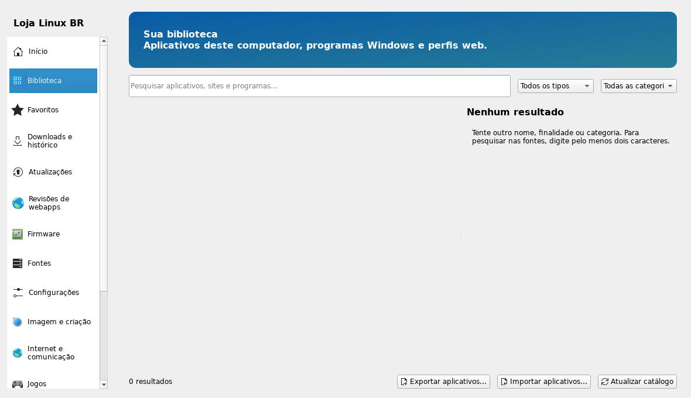

Na Biblioteca da Loja, use Exportar aplicativos… para salvar a lista. No outro computador, escolha Importar aplicativos…, revise os itens encontrados e confira as evidências de teste da origem e do formato antes de confirmar a reinstalação.
